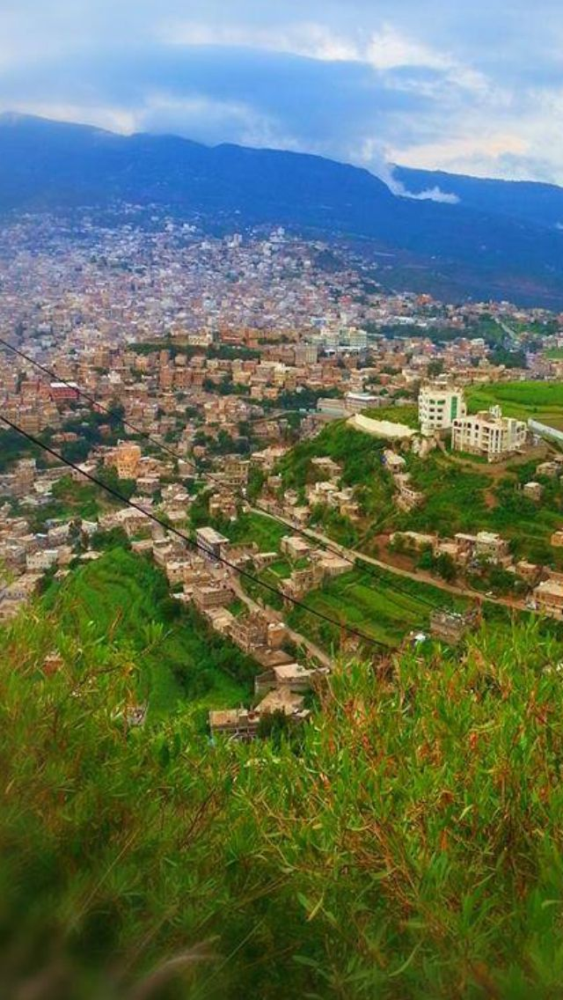

الأزياء التقليدية اليمنية
تعرف على جمال وتنوع الأزياء اليمنية عبر المناطق والعصور
معرض الأزياء التقليدية
استكشف تنوع وجمال الأزياء اليمنية من مختلف المناطق

الزي اليمني التقليدي للرجال
يتكون من الفوطة، الجنبية، والمعطف التقليدي
مكونات الزي: الفوطة، الجنبية، المعطفالزي النسائي التقليدي
الثوب اليمني المطرز والزرقة والحلي التقليدية
مكونات الزي: الثوب المطرز، الزرقة، الحلي

الأزياء الاحتفالية
أزياء المناسبات والأعراس والاحتفالات الخاصة
مميزات خاصة: أزياء العرس، الحلي الذهبية، التطريز الفاخرصور الأزياء